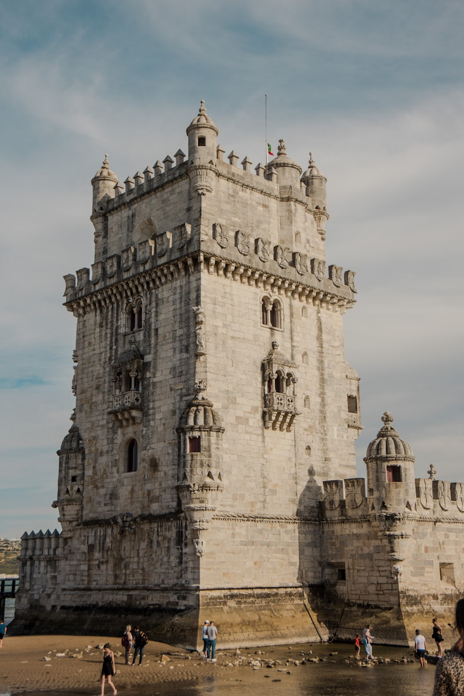
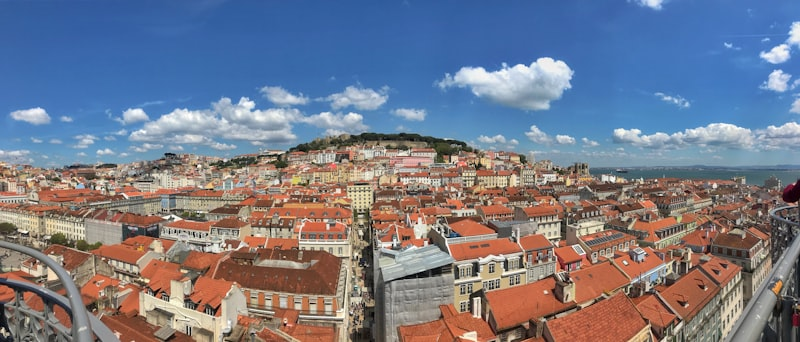

Workshop on Information Systems & Economics
The premier forum for research at the intersection of information systems and economics
WISE is the premier academic forum for the discussion of research relating to the economics of information systems. Founded in 1989, WISE brings together leading researchers, industry practitioners, and students to explore critical issues at the intersection of information systems, economics, and technology.
WISE 2026 will be held in Lisbon, Portugal — a city celebrated for its innovation ecosystem, centuries of global connectivity, and vibrant academic community.

The 37th Workshop on Information Systems and Economics (WISE) is the premier academic forum for research that examines information systems through the lens of economics. The workshop focuses on how digital technologies are reshaping economic activity, organizational decision-making, market structures, and society. We invite research that examines the incentives, mechanisms, and consequences associated with the development, deployment, diffusion, and use of information technologies.
More specifically, we encourage submissions in the following thematic areas:
The economic implications of artificial intelligence, generative AI, agentic systems, automation, and algorithmic decision-making for firms, markets, workers, and consumers.
Digital platforms, online marketplaces, digital goods, ecosystem governance, pricing, competition, business models, and value creation in digital environments.
The role of data, analytics, machine learning, personalization, recommender systems, and digital experiments in shaping managerial, consumer, and policy decisions.
Cybersecurity, privacy, digital identity, online safety, AI governance, fairness, bias, transparency, accountability, and the regulatory challenges associated with digital technologies.
How digital technologies affect work, collaboration, productivity, organizational design, human capital, human–AI collaboration, and the future of digital organizations.
The broader societal and environmental implications of information technologies, including digital inclusion, healthcare IT, sustainability, misinformation, and the public-policy implications of digital transformation.
Financial technologies, digital payments, cryptocurrencies, stablecoins, central bank digital currencies, tokenization, decentralized finance, and blockchain-based systems, including their implications for market design, financial intermediation, regulation, and access to financial services.
We welcome high-quality theoretical, empirical, experimental, and computational research on these and related topics in the economics of information systems.
Papers are submitted and managed through our conference submission system, PaperFox. The submission portal opens on June 15, 2026.

The venue for WISE 2026 in Lisbon will be announced soon. Lisbon, the capital of Portugal, is known for its rich history, stunning architecture, vibrant culture, and world-class cuisine. More details about the conference venue, accommodation, and travel information will be provided as they become available.
Lisbon Humberto Delgado Airport (LIS) is well-connected to major international hubs. The city center is a short metro or taxi ride from the airport.
Conference hotel details and group booking rates will be shared once the venue is confirmed. Lisbon offers a wide range of accommodation options.
December in Lisbon offers mild temperatures around 10–15°C (50–59°F) with occasional rain — pleasant compared to many European winter destinations.
Registration details and fees for WISE 2026 will be announced soon. Registration deadlines: early registration through October 15, 2026, regular registration through November 1, 2026, and late registration through November 30, 2026.
The program and social events for WISE 2026 are being planned. The conference will feature an evening welcome reception on Wednesday, December 16, followed by two full days of paper presentations with assigned discussants on December 17–18. Details will be announced closer to the conference date.
Sponsorship opportunities for WISE 2026 are available. If your institution is interested in sponsoring, please contact the organizing committee.
Become a Sponsor